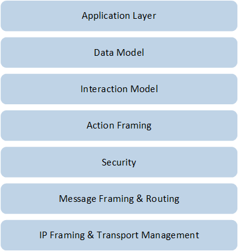
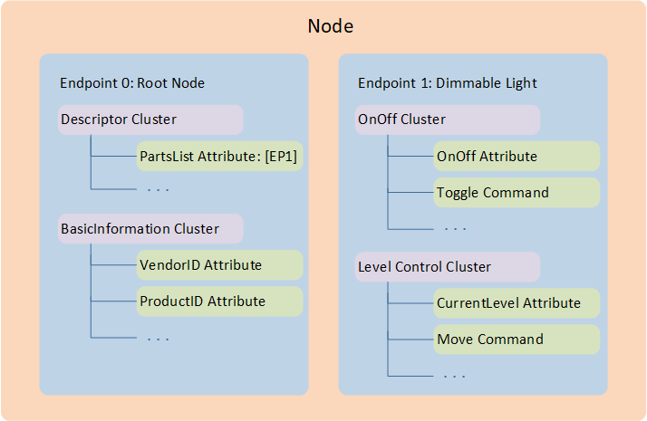
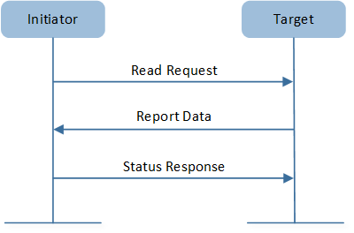
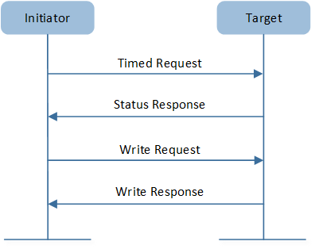
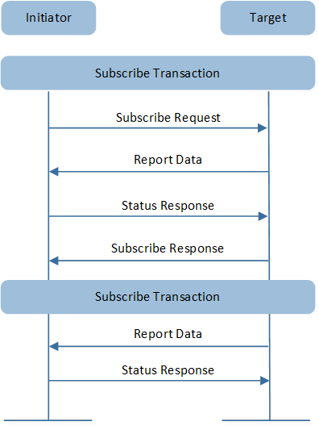
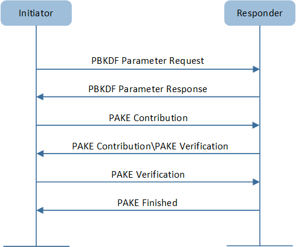
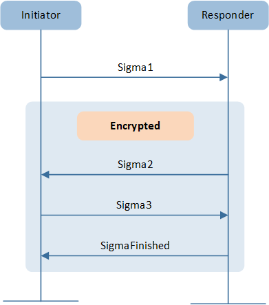
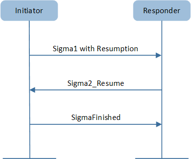

Matter Protocol
Matter is a unified, open-source application-layer connectivity standard built to enable developers and device manufacturers to connect and build reliable, and secure ecosystems and increase compatibility among connected home devices.
Terminology and Concepts
Matter protocol defines the application layer that will be deployed on devices and the different link layers to help maintain interoperability. The following diagram illustrates the normal operational mode of the stack.

Matter Architecture Overview
Matter protocol stack is divided into the application layer, transport layer, network layer, and link/media layer. The application layer is compatible with various smart home ecosystems, allowing devices from different manufacturers to work together seamlessly. The transport and network layers handle communication between devices. The physical and link layers include current mainstream wireless standards such as Thread, Wi-Fi, and Ethernet.
Thread is a secure wireless mesh networking protocol based on the IEEE 802.15.4 standard. Wi-Fi is a wireless network protocol based on the IEEE 802.11 standard, commonly used to establish local area networks between devices and provide internet access. Ethernet is a wired network technology based on the IEEE 802.3 standard.
Layer Description
The architecture is divided into layers to help separate the different responsibilities and introduce a good level of encapsulation among the various pieces of the protocol stack. The vast majority of interactions flow through the stack captured in the following figure.
{kind=link}

Matter Layered Architecture
The explanation of each level is as follows:
Layer |
Description |
|---|---|
Application Layer |
High-order business logic of a device. For example, an application that is focused on lighting might contain logic to handle turning on/off the bulb as well as its color characteristics. |
Data Model |
The data layer corresponds to the data and verb elements that help support the functionality of the application. The Application operates on these data structures when there is an intent to interact with the device. |
Interaction Model |
The Interaction Model layer defines a set of interactions that can be performed between a client and server device. For example, reading or writing attributes on a server device would correspond to application behavior on the device. These interactions operate on the elements defined at the data model layer. |
Action Framing |
Once an action is constructed using the Interaction Model, it is serialized into a prescribed packed binary format to encode for network transmission. |
Security |
An encoded action frame is then sent down to the Security Layer to encrypt and sign the payload to ensure that data is secured and authenticated by both sender and receiver of a packet. |
Message Framing & Routing |
With an interaction encrypted and signed, the Message Layer constructs the payload format with required and optional header fields; which specify the message's properties and some routing information. |
IP Framing & Transport Management |
After the final payload has been constructed, it is sent to the underlying transport protocol for IP management of the data. |
Below is a detailed introduction of the content and functions of the three layers: data model, interaction model, and security.
Data Model
The Matter Data Model describes a hierarchical encapsulation of data elements in the Matter network, including node, endpoint, and cluster, among others.

Data Model
Node
A node encapsulates an addressable, unique resource on the network that has a set of functions and capabilities that a user recognizes distinctly as a functional whole.
This distinction is usually physical, such as the physical device itself, or a logical instance of a physical device.
A node is the highest or outermost first order element in the data model and it is also the outermost unique addressable element of the data model.
Endpoint
A node is composed of one or more endpoints. An endpoint is an instance of something that could be a service or virtual device as indicated by a device type.
Cluster
Clusters are object classes that are instantiated on an endpoint. Each cluster is defined by a cluster specification that defines elements of a cluster including:
Attribute
Event
Command
These are typical elements in Matter data model. To better understand, we will illustrate with two examples. The dimmable light example demonstrates the complete data model structure of a dimmable light device, while the client and server example focuses on showing how the client and server clusters interact within the data model.
Dimmable Light
The following figure illustrates the data model structure of a dimmable light device.

Dimmabe Light Data Model
The diagram provides a clear illustration of the endpoints, supported clusters, and the attributes and commands contained within each cluster of the dimmable light device. Below is a detailed description.
Node
In this example, the dimmable light is a node, which is often the physical device that users can recognize as the whole device.
Endpoint
In Matter devices, endpoint 0 shall be the root node endpoint and shall support the root node device type.
The main function of the root node device type is to describe the node and what endpoints the node supports, and it belongs to the utility device type. The PartsList of the Descriptor cluster on the root node endpoint SHALL list all endpoints on the node, except the root node endpoint.
As shown in the above diagram, the device type of endpoint 0 is the root node, and its PartsList attribute includes endpoint 1. The device type of endpoint 1 is dimmable light, which belongs to the application device type.
Cluster
In our diagram, endpoint 1 is shown with two clusters, the OnOff cluster and the Level Control cluster.
OnOff cluster: provides a set of attributes and commands to turn the device on or off.
Level Control cluster: provides an interface for controlling a characteristic of a device that can be set to a level, for example the brightness of a light, the degree of closure of a door, or the power output of a heater.
Element |
Description |
Example |
|---|---|---|
Attribute |
Attributes reflect queryable/settable state, configuration and capabilities of a device. They can be read or written. |
The example respectively shows one attribute of the OnOff cluster and the Level Control cluster.
|
Command |
Commands are actions that a cluster can perform, and they are divided into two types: request commands and response commands. |
|
Event |
An event defines a record of something that occurred in the past. In this regard, an event record can be thought of as a log entry, with an event record stream providing a chronological view of the events on the node. |
The two clusters shown in the example do not have event elements. |
Clients and Servers
Now that we understand the common elements of the Matter data model, let's explore another important concept within the data model: client and server clusters.
A cluster specification defines both a server and client side that correspond with each other through interactions.
Server cluster: supports attribute data, events and cluster commands.
Client cluster: initiates interactions, including invocation of cluster commands.
The cluster IDs of server clusters and client clusters on an endpoint can be obtained through the following attributes of the Descriptor cluster.
ServerList attribute: This attribute SHALL list each cluster ID for the server clusters present on the endpoint instance.
ClientList attribute: This attribute SHALL list each cluster ID for the client clusters present on the endpoint instance.
The following example of a dimmable light and a dimmer switch illustrates the interaction between server and client.

Clients and Servers Cluster
In this example, the dimmable light implements the OnOff and Level Control cluster servers, while the dimmer switch implements the OnOff and Level Control cluster clients.
The client clusters on the switch will send commands to the server clusters on the light to control its on/off state and brightness.
Interaction Model
The Matter interaction model defines the methods of communication between nodes. The first transaction (of an interaction) starts with the first action from the node called the initiator. The first action destination is called the target, which is either a node or group. For the remainder of the interaction, the initiator remains the same.
An interaction may be a single transaction (e.g. Read). An interaction may be an unbounded number of transactions (e.g. Subscribe). A transaction is either the whole, or part of an interaction. A transaction is a sequence of one or more actions.
As shown in the figure below. Each interaction is made of transactions 1..n, which in turn are made of actions 1..n. Each action can be conveyed by one or more messages.

Interaction Structure
The interaction model supports four types of interactions.
All interaction types except Subscribe consist of one transaction. The Interaction Model supports five types of transactions:
Interaction |
Transactions |
Description |
|---|---|---|
Read |
Request for cluster attributes and/or event data. |
|
Write |
Modify attribute values. |
|
Invoke |
Invoke cluster commands. |
|
Subscribe |
Create subscription for periodic updates from servers. Subscriptions can be related to attributes and events. |
|
Report |
Maintain the subscription for periodic updates. |
Read Interaction
This interaction is generated when an initiator wishes to determine the value of one or more attributes or events located on a node.
{kind=link}

Read Interaction
Operation Sequence |
Description |
|---|---|
Read Request |
Read Request action is the first action of a Read transaction (and interaction). |
Report Data |
Upon receipt of a Read Request, target sends back the requested list of attributes and/or events, a suppress response, and a subscription ID. |
Status Response(OPTIONAL) |
If SuppressResponse in Report Data is TRUE, a response SHALL NOT be generated; otherwise, a Status Response Action SHALL be generated with a status code. |
Read Transaction Restrictions
Read Transaction is limited to unicast communication only. This means that Read Request and Report Data actions can only target a single node and cannot target a group of nodes. Additionally, Status Response actions cannot be generated as a response to a groupcast.
This restriction ensures that communication occurs only between two nodes, avoiding potential issues that may arise from handling multiple recipients simultaneously.
Write Interaction
This interaction is started when an initiator wishes to modify the values of one or more attributes located on one or more nodes.
{kind=link}

Write Interaction
Write interaction includes Timed or Untimed write transaction.
Operation Sequence |
Description |
|---|---|
Timed Request |
Sets the time interval for sending a Write Request Action. |
Status Response |
Confirms the transaction and the specified time interval. |
Write Request |
Includes the following elements:
If the transaction is timed and the timed request flag is set, the initiator must also specify a timeout: the number of milliseconds the transaction remains open, during which subsequent actions are considered valid. |
Write Response (OPTIONAL) |
A list of paths or error codes for each write request. Similar to a Read Transaction Status Response, a Write Response is not sent if the suppress response flag is set. |
Untimed Write Transaction consists solely of the Write Request Action and the Write Response Action.
Unlike a Timed Write Transaction, there is no need to set or confirm a time interval.
Timed Write Transaction and Untimed Write Transaction Restrictions
Timed Write Transaction: All actions are unicast-only.
Untimed Write Transaction: Write Request Actions may be multicast, but the Suppress Response flag must be set to prevent the network from flooding with status responses.
Invoke Interaction
An initiator invokes command(s) on a target's cluster(s) through Invoke Interactions. This interaction can be either Timed or Untimed Invoke Transaction, similar to Write Interaction.

Invoke Interaction
Operation Sequence |
Description |
|---|---|
Timed Request |
Sets the time interval for the entire transaction. |
Status Response |
Confirms the transaction and the specified time interval. |
Invoke Request |
Requests the following items:
Additionally, if initiating a timed Invoke Transaction, a timeout must be specified just like in a Timed Write Transaction. |
Invoke Response(OPTIONAL) |
The target responds with the interaction ID and a list of invoke responses, which include command responses and statuses for each invoke request. Like the Write Response, an Invoke Response is not sent if the suppress response flag is set. |
Untimed Invoke Transaction does not require setting or confirming a time interval.
It consists of only the Invoke Request Action and the (optional) Invoke Response, similar to Untimed Write Transactions.
Timed Invoke Transaction and Untimed Invoke Transaction Restrictions
Timed Invoke Transaction: All actions are unicast-only.
Untimed Invoke Transaction: Invoke Request Actions may be multicast, but the Suppress Response flag must be set to prevent the network from being flooded with responses.
Subscribe Interaction
An initiator uses a Subscribe Interaction to automatically receive periodic Report Data Transactions from the target, establishing a relationship between the initiator (subscriber) and the target (publisher) after the subscription is made.
Subscribe Interaction include two transaction types:
{kind=link}

Subscribe Interaction
Subscribe Transaction
Operation Sequence |
Description |
|---|---|
Subscribe Request |
Requests the following items:
|
Report Data |
Contains the first batch of data, known as the Primed Published Data. |
Status Response |
Acknowledges the Report Data Action. |
Subscribe Response |
Finalizes the subscription ID (an integer that acts as an identifier for the subscription) and confirms the min interval floor and max interval ceiling. This action indicates a successful subscription between the subscriber and publisher. |
Report Transaction
After a successful Subscribe Transaction, Report Transactions are periodically sent to the subscriber. There are two types of Report Transactions: non-empty and empty.
Report Data Action: Contains data and/or events with the SuppressResponse flag set to FALSE.
Status Response: Indicates a successful report or an error. An error response ends the interaction.
Report Data Action: Contains no data or events with the SuppressResponse flag set to TRUE, which means no Status Response is generated.
Subscribe Interaction Restrictions
Unicast-only Subscribe Actions: The Subscribe Request and Subscribe Response actions must be unicast, meaning an initiator cannot subscribe to more than one target simultaneously.
Consistent Subscription ID: Report Data Actions within the same Subscription Interaction must have the same subscription ID.
Subscription Termination: A subscription may be ended if the subscriber responds to a Report Data Action with an 'INACTIVE_SUBSCRIPTION' status, or if the subscriber does not receive a Report Data Action within the max interval ceiling. The latter implies that the publisher may end a subscription by not sending Report Data Actions.
Network Security
The Matter network security aims at authenticating only trustworthy devices to the Matter fabric and protecting the confidentiality of messages exchanged between the fabric nodes.
Session Establishment
Session establishment is a process that serves two purposes. It is used to exchange encryption keys required for establishing a secure communication between nodes. It also involves mutual node authentication, which assures both nodes that they initiate communication with a trusted peer.
The following session establishment methods are available:
Passcode-Authenticated Session Establishment (PASE)
The Passcode-Authenticated Session Establishment (PASE) protocol aims to establish the first session between a Commissioner and a Commissionee using a known passcode provided out-of-band. The pairing is performed using Password-Authenticated Key Exchange (PAKE) and relies on a Password-Based Key Derivation Function (PBKDF) where the passcode is used as password.
This session establishment protocol provides a means to:
Communicate PBKDF parameters.
Derive PAKE bidirectional secrets.
{kind=link}

Overview of the PASE Protocol
When using PASE, both nodes share the same secret in the form of 8-digit passcode. The shared secret is used by the SPAKE2+ algorithm to ensure a safe exchange of keys over non-secure channel. This process takes place when commissioning the device. To reduce the computational cost of the SPAKE2+ algorithm on constrained devices, the passcode can be used to calculate the SPAKE2+ Verifier offline. With the Verifier pre-calculated, the device no longer needs the passcode when executing the algorithm.
Certificate-Authenticated Session Establishment (CASE)
This session establishment mechanism provides an authenticated key exchange between exactly two peers while maintaining privacy of each peer. A resumption mechanism allows bootstrapping a new session from a previous one, dramatically reducing the computation required as well as reducing the number of messages exchanged.
This session establishment protocol provides a means to:
Mutually authenticate both peer Nodes.
Generate cryptographic keys to secure subsequent communication within a session.
Exchange operational parameters for the session, such as Session Identifier and MRP parameters.
The basic protocol can be achieved within 2 round trips as shown below:
{kind=link}

Basic Session Establishment
The protocol also provides a means to quickly resume a session using a previously established session. Resumption does not require expensive signature creation and verification which significantly reduces the computation time. Because of this, resumption is favoured for low-powered devices when applicable. Session resumption SHOULD be used by initiators when the necessary state is known to the initiator.
{kind=link}

Session Resumption
When using CASE, both nodes own Node Operational Certificates that chain back to the same root of trust. The NOCs are used by the SIGMA algorithm to ensure a mutual node authentication and a safe exchange of keys over non-secure channel. This process takes place while establishing the secured communication between nodes that are already commissioned. The concept of Root of Trust in Matter revolves around a certification authority (CA) identified by the Root Public Key (Root PK). The CA is responsible for issuing and assigning Node Operational Certificates (NOCs) or Intermediate Certificate Authority Certificates (ICACs). During the Matter network ommissioning, the commissioner installs NOCs along with Trusted Root CA Certificates.
Sample Projects
To facilitate future development, the SDK provides a sample app for users to reference.
Lighting Demo Application: Lighting
Light Switch Demo Application: Light Switch
OTA Requestor Demo Application: OTA Requestor
Window Covering Demo Application: Window Covering
Door Lock Demo Application: Door Lock
References
Matter Core Specification. Version 1.3